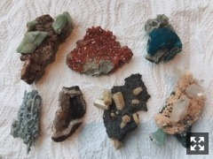
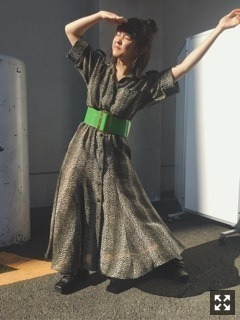
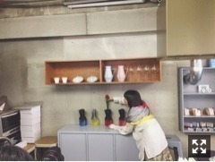
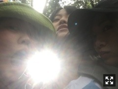
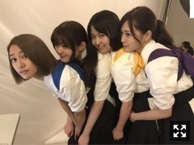

一昨日はらじらー！にゲスト出演しました！
お久しぶりでしたが、
ひめたんだしオリラジさんは面白いし、、
終始爆笑していました。
3人の空気感好きだなー素敵だー
休憩中もたくさんお話できてよかったです。
ありがとうございました！
新しい趣味企画もありがたかった。
今はドライフラワー(も)です。
藤森さんもドライフラワー仲間だった！
仕事終わりにミネラルフェア行ってきた！
新たに仲間が増えました。

ひゃーーーーたまらん！
鉱物たまらん！！
おじさんがナイスセレクト！
って言ってくれた！ナイスセレクト！

チーター柄？のワンピース
緑のベルト
ブレーカーシューズ
握手会で着た服です。
最近は原色もよく集まるよ。

発売中のMdNお相手は
KIGIの渡邉良重さん、植原亮輔さんです。
D-BROSのフラワーベースや
私の大好きな絵本「BROOCH」を
つくった方！！
渡邉さんの描く絵は昔から馴染み深い。
植原さんとのコンビネーション抜群で
話を聞いててとても納得、勉強になった。
コップ一杯の水がヒタヒタの状態。
こぼれ落ちたら新しい器を用意してもらう。
自分でちゃんと満タンになれる領域で、
楽しむ余裕。
かっこいい、そんな風になりたい。
もうひとつの絵本
「ジャーニー」とコラボした
薗部悦子さんのジュエリーも
本当に素敵だー、、

絶賛上演中の舞台『あさひなぐ』
映画版で野上えり役を務めました。
薙刀の面白さを体感できて
本当によかったです。
キャスト登壇イベントでちょっとだけ
団体基本を披露しましたが、
映画の方でも号令かけたりしてます。
二ツ坂高校薙刀部 部長です！
薙刀稽古から撮影までの期間は
本当に部活の合宿のようでした。
9月22日公開
よろしくお願いします。

この4人でスピリッツ表紙飾っています！
この日は本当によく笑ってた〜
まりか